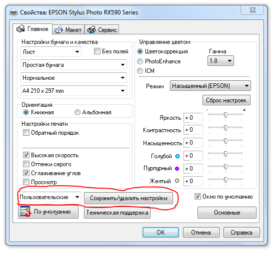

Границы области печати
tetya / 11.11.2009, 12:22/00:41
Форум:
Только не давно начала работать в Корале. РАньше печатала макеты формата А4 без проблем, а сейчас в режиме предворительного просмотра появилась пунктирная линия по всему пириметру листа и макет печатается только до пунктирной линии. КАк это устранить?
А если нужно сохранять настройки для каждой бумаги по отдельности то сюда:

Страницы